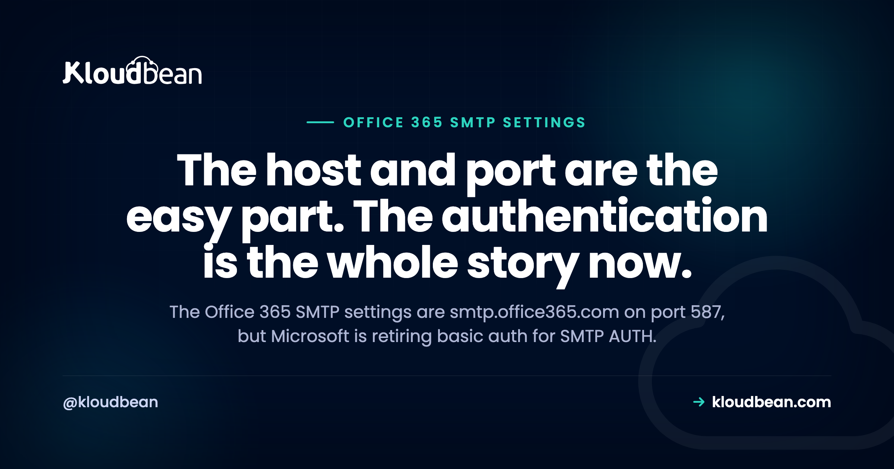

Office 365 SMTP Settings, and Why Your Password No Longer Works

You need your app, your WordPress contact form, or a script to send mail through Microsoft 365, so you look up the SMTP settings. Every result gives you the same four lines: host, port, your email address, your password. Those settings are still correct, and the password part is being switched off. Microsoft has been retiring basic authentication for SMTP submission, which means the configuration in nearly every tutorial on this subject is on its way to failing, or has already failed for you. So here are the settings, and then the part that decides whether they work.
Server smtp.office365.com, port 587, STARTTLS encryption, and your full email address as the username. That much has not changed. What has changed is authentication: Microsoft's Exchange team has announced that Exchange Online permanently removes support for basic authentication with Client Submission, the SMTP AUTH path, with rejections beginning 1 March 2026 and reaching 100% on 30 April 2026. So a plain password, and an app password too, stops working. Anything that still needs to send has to move to OAuth, to the Microsoft 365 SMTP relay, or to a dedicated sending service. And separately, SMTP AUTH is switched off by default in a lot of tenants, which is the most common reason perfectly correct settings fail.
The settings themselves
Take these, then read the next two sections before concluding anything is broken.
| Field | Value |
|---|---|
| SMTP server | smtp.office365.com |
| Port | 587 |
| Encryption | STARTTLS, sometimes labelled TLS. Not SSL on 465. |
| Authentication | Required. See below, this is the part that matters. |
| Username | Your full email address, not just the part before the @ |
| From address | Must match the mailbox you authenticate as, or be a permitted send-as |
Those values are for authenticated client submission, which is the method people mean when they search for SMTP settings. Microsoft supports two other sending methods with entirely different settings, covered further down, and one of them is probably where you are heading.
Why your password stopped working
This is the section the rest of the internet has not caught up with, so it is worth being precise about what Microsoft has actually said.
Basic authentication means sending a username and password with each request. Microsoft spent years removing it from Exchange Online, and by the end of 2022 it was disabled for the other protocols with no way for anyone, including Microsoft support, to turn it back on. SMTP AUTH was deliberately left until last, because so many devices, line-of-business apps, and scripts depend on it. That is why your SMTP settings kept working long after your old mail client stopped.
That exception is now closing. Microsoft's Exchange team has published that Exchange Online will permanently remove support for basic authentication with Client Submission, gradually rejecting a small percentage of submissions for all tenants from 1 March 2026 and reaching 100% rejection on 30 April 2026. That timeline was itself a revision of an earlier September 2025 date, so treat the specific dates as Microsoft's plan rather than gospel and check the current position for your tenant.
Two consequences people miss:
App passwords do not save you. An app password is still basic authentication. It was a workaround for multi-factor auth, not a replacement for basic auth, so it retires with everything else. Any guide telling you to generate one for SMTP is out of date.
The failure looks like a wrong password. You get an authentication failure, so the natural response is to reset the password, retype it, and check for a typo. Nothing about the error says the method itself has been withdrawn. Recognise the signature instead: correct credentials that work when you sign in to the web mail, failing only for SMTP, with an authentication-unsuccessful response from smtp.office365.com.
# Prove what the server actually says, rather than guessing from your app's error.
openssl s_client -starttls smtp -crlf -connect smtp.office365.com:587
# then, at the prompt:
EHLO test
# Look at the AUTH line it advertises, and whether LOGIN is still offered.Correct settings that still fail: check these three first
Separate from the retirement above, there are three switches that block SMTP AUTH regardless of your credentials. Any one of them produces the same authentication failure.
| Cause | Where to look |
|---|---|
| SMTP AUTH disabled for the tenant. Microsoft recommends disabling it organisation-wide and enabling it only per mailbox, so on a tidy tenant it is off by design. | Exchange admin centre, mail flow settings. There is a switch to turn off SMTP AUTH for the organisation. |
| Security defaults are enabled. If they are, SMTP AUTH is already disabled, and no per-mailbox setting overrides that. | Microsoft Entra ID, security defaults. This is the one people never think to check. |
| An authentication policy blocks basic auth for SMTP. If a policy disables it, clients cannot use SMTP AUTH even where the settings above are enabled. | Your organisation's authentication policies. |
The order matters. Check security defaults first, because it silently overrides the thing you were about to spend an hour on. Then the tenant switch, then the per-mailbox setting, which exists specifically so you can enable one service account without opening up everybody.
The four ways to send, and how to pick
Once basic auth is gone, "what are the SMTP settings" turns into a real architectural choice. There are three Microsoft methods and one that is not Microsoft's, and one constraint decides it: can the thing that needs to send speak OAuth? For most WordPress plugins, small scripts, and older devices the honest answer is no.
| Method | How it authenticates | Right when |
|---|---|---|
| SMTP AUTH with OAuth port 587 | OAuth 2.0 token from a registered app | Your code can implement OAuth, or your framework's mailer supports XOAUTH2. Real work, and the only surviving Microsoft client-submission path. |
| Microsoft 365 SMTP relay port 25 | Your server's public IP, via a connector. No mailbox password. | An app or device that cannot do OAuth, and you can give it a static public IP and a TLS certificate. Sends to external recipients. |
| Direct send port 25 | Nothing. No authentication. | You only need to reach recipients inside your own organisation. It does not deliver reliably to outside addresses. |
| A dedicated sending service | An API key, or SMTP credentials of its own | Almost every application case. See the recommendation below. |
WordPress, where this bites hardest
WordPress is the most common place this fails, because a plugin form is exactly the kind of sender that cannot do OAuth on its own.
Two separate problems get conflated here. First, WordPress's built-in mail function hands off to the server's local mail transport, which on most hosting will not deliver reliably to inboxes, so form submissions vanish. An SMTP plugin exists to fix that by sending through a real mail service instead. Second, if you point that plugin at Microsoft 365 using a username and password, you are configuring the method being retired.
So the practical position for a WordPress site today: use an SMTP plugin, and point it at something that authenticates with an API key rather than a mailbox password. Several mainstream SMTP plugins ship direct integrations for the common sending services precisely because this is where everyone ends up. If you must go through Microsoft 365, check whether your plugin supports OAuth for Microsoft specifically, and treat a plugin that only offers username and password as a dead end rather than a configuration puzzle.
One thing worth checking before you change anything, because it is free: confirm the mail is genuinely not being sent rather than not being delivered. Those need different fixes, and the SMTP ports guide covers the delivery side, including the three DNS records that decide whether mail arrives at all.
What I would actually do
An opinion, since the four-way table does not commit to anything.
If a person sends it, use Microsoft 365. If a machine sends it, do not. Microsoft 365 is a mailbox service designed around humans signing in. Application mail has different requirements: it needs to authenticate without a human, survive credential rotation, retry sensibly, and tell you what happened to each message. That is what a dedicated sending service does, and it is why the pattern of transactional mail going through one is so common. It also means your password policy and your signup emails stop being the same problem.
The exception is genuine. If you are a one-person company and the only mail your site sends is a contact form to yourself, wiring up a relay connector and a static IP is more machinery than the problem deserves, and internal-only direct send may be all you need. Match the effort to the stakes.
Where the OAuth path is worth the work: an application you control the code of, sending as a real mailbox in your own tenant, where sending from your own domain identity matters. It is a proper implementation job rather than a settings change, and going in expecting that saves a frustrating afternoon.
What the platform is responsible for
Straight answer: none of this is a hosting feature, and nothing on this page is solved by changing host. These are Microsoft 365 tenant settings and an architecture decision about your application.
The one place hosting genuinely intersects is outbound port 25, which most providers block by default to stop their address space being used for spam. That is why the relay and direct-send options above are described on port 25 with a caveat, and it is the subject of the ports article. Submission on 587 to a service is the shape that works nearly everywhere, which is another reason the last row of the table wins so often.
What helps around the edges on Kloudbean: application and server logs sit in the same dashboard, which is where a mailer's authentication failure actually shows up rather than in a plugin's cheerful test screen; cron jobs are managed from the UI, which matters if your sending is queued or batched; and environment variables live in runtime configuration, which is where an API key belongs instead of in your code. Seven cloud providers, free SSL, free migration assistance.
The boundary is unchanged. The box, its stack, its certificates and its backups are somebody else's rota. Your tenant, your sending identity, and your application's mail logic stay yours.
When mail still will not send
On ports, relays, and the DNS records that decide deliverability, port 25 and the SMTP ports is the companion to this page and covers what this one deliberately does not. For keeping an API key out of your code, environment variables done right. If sending is batched or retried, background jobs with BullMQ and Celery with Redis. When a mailer failure surfaces as a generic server error instead, 500 Internal Server Error covers getting the real message out of the log. And on the WordPress side, managed WordPress hosting.
Find the real error instead of retyping the password.
Managed servers across seven clouds with application and server logs in one dashboard, runtime configuration for your API keys, and cron jobs from the UI. Free SSL issued and renewed. Free migration assistance included. Start at kloudbean.com or see pricing.
App and server logs · Runtime config · Cron in the UI · Free SSL · One dashboard
FAQ
What are the Office 365 SMTP settings?
Server smtp.office365.com, port 587, STARTTLS encryption, authentication required, and your full email address as the username. Those values are for authenticated client submission. The from address must match the mailbox you authenticate as, or be an address you have permission to send as.
What port does Office 365 SMTP use?
Port 587 with STARTTLS for authenticated client submission. Not 465, which is the older implicit-SSL convention and is not what Microsoft documents for this. Microsoft's other two sending methods, the SMTP relay and direct send, use port 25 instead, and that port is blocked outbound by most hosting providers.
Why is my Office 365 SMTP authentication failing with the correct password?
Three likely causes beyond the credentials. SMTP AUTH may be disabled for your whole tenant, which Microsoft actually recommends. Security defaults may be enabled, in which case SMTP AUTH is already off and no per-mailbox setting overrides it. Or an authentication policy is blocking basic auth for SMTP. Check security defaults first, because it silently overrides the other settings.
Is Microsoft disabling SMTP basic authentication?
Yes. Microsoft's Exchange team has published that Exchange Online permanently removes support for basic authentication with Client Submission, which is SMTP AUTH, with a small percentage of submissions rejected from 1 March 2026 and 100% rejection from 30 April 2026. That timeline replaced an earlier September 2025 date, so confirm the current position for your own tenant rather than relying on a date in any article.
Do app passwords still work for Office 365 SMTP?
No, and this catches a lot of people. An app password is still basic authentication, so it retires along with it. App passwords were a workaround for multi-factor authentication, not an alternative to basic auth, and any guide recommending one for SMTP is out of date.
What should I use instead of SMTP AUTH with a password?
One of four things. SMTP AUTH with OAuth 2.0 if your application can hold a token, which is real implementation work. The Microsoft 365 SMTP relay if your sender cannot do OAuth and you can give it a static public IP. Direct send if your recipients are all inside your own organisation. Or a dedicated sending service authenticated with an API key, which is the usual answer for application mail.
Can WordPress send email through Office 365?
It can, but the common setup is the one being retired, because most SMTP plugins offer only a username and password for Microsoft. Check whether your plugin supports OAuth for Microsoft specifically. If it does not, treat that as a dead end rather than a configuration problem, and point the plugin at a sending service that authenticates with an API key instead.
Why do my WordPress contact form emails disappear?
Usually because WordPress hands mail to the server's local transport, which is not a real sending service, so messages are either never accepted or are discarded as unauthenticated by the receiving side. An SMTP plugin pointed at a proper sending service fixes it. Confirm first whether the mail is failing to send or failing to deliver, because those have different fixes.
Should application email go through Microsoft 365 at all?
Generally no. Microsoft 365 is a mailbox service built around people signing in, while application mail needs to authenticate without a human, survive credential rotation, retry sensibly, and report per-message outcomes. A dedicated sending service is designed for that. The exception is small: if the only mail your site sends is a contact form to yourself, the simplest thing that works is fine.